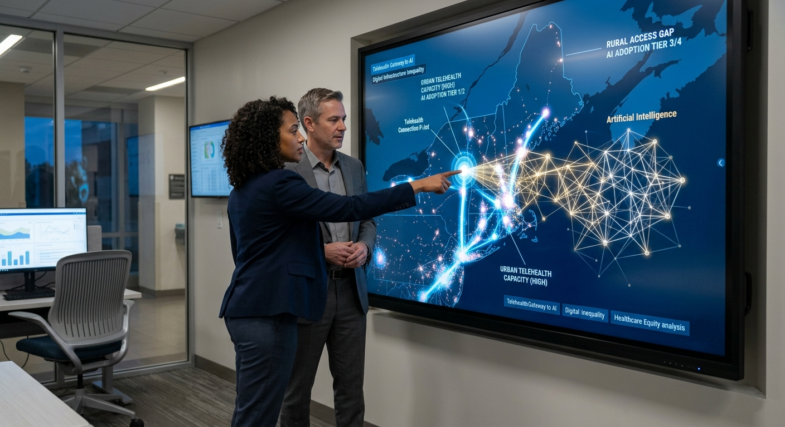
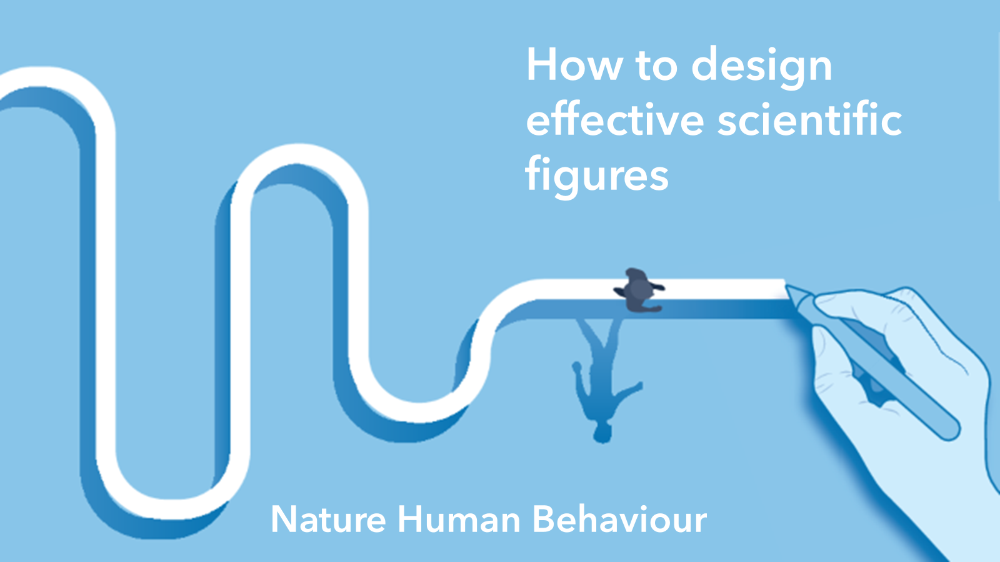

Place-Based
Explainable AI for
Real-World Decisions
Interpretable GeoAI methods, open spatial workflows, and AI-powered research systems for cities, health, climate, mobility, and public resources.
PlaceXAI Solutions & Products
FlowX
AI Visual Notebook
A node-based visual environment for building, running, and explaining GeoAI workflows — no code required. Drag, connect, and inspect every step from data to map.
GAEK
Geospatial Analytics Extension for KNIME
Vector, raster, and network spatial-analysis nodes that bring reproducible GIS directly into visual KNIME pipelines — analyze geometry, rasters, and networks without leaving your workflow.
GEEK
Google Earth Engine Extension for KNIME
Tap Google Earth Engine's planetary-scale satellite imagery and analysis from inside visual KNIME workflows — no separate code environment, fully reproducible.
R2SFCA
Reconciled 2SFCA Accessibility
A reconciled two-step floating catchment area model measuring spatial access to healthcare, services, and amenities — open-source on PyPI & GitHub.
PG-MST
Physics-informed GNN + Minimum Spanning Tree
A physics-informed graph neural network with minimum spanning trees for network-based service-area delineation that respects real road networks and population distribution.
XGeoML
Explainable Geospatial ML
Train spatial machine-learning models with built-in, place-aware interpretability and feature attribution — predictions you can trust, inspect, and explain.

News
Announcements, milestones, and partnerships from the lab.
Read news →
AI Digest
Curated updates on AI for places, urban analytics, and spatial data.
Today's digest →
Projects
Ongoing projects addressing real-world urban, health, and climate challenges.
View projects →
Publications
Peer-reviewed and working papers on interpretable, place-based AI.
View publications →AI should be interpretable, trustworthy, and aligned with human values.
We are an interdisciplinary network of researchers, engineers, fellows, and students advancing place-based AI for a more equitable and sustainable world. Our philosophy guides every method we build and every collaboration we form.
Meet the Network →